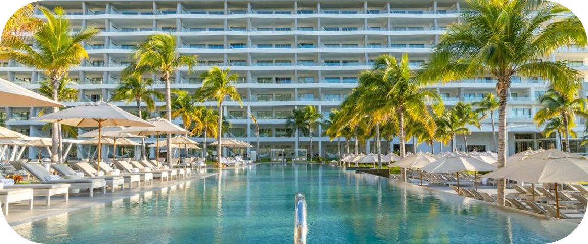
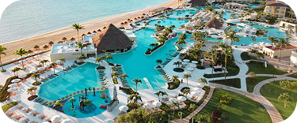
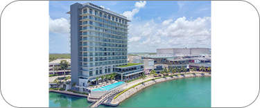
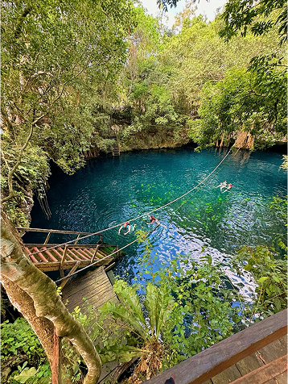
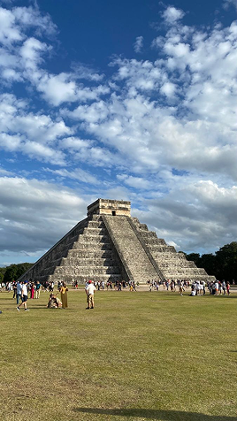
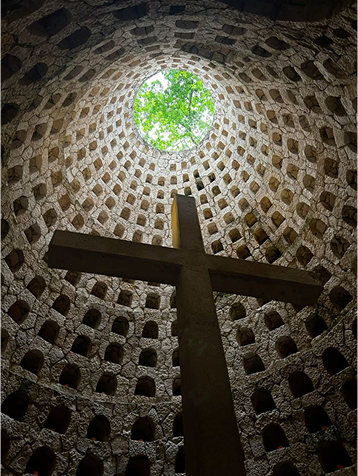

Hospedaje destacado
Garza Blanca Resort
Playa, piscinas y espacios para disfrutar en familia.
Conocer el hospedajeDías junto al mar, cenotes y lugares que se quedan contigo. Empieza a explorar tu próxima escapada.
01 / Cómo llegar
Preferencias de la demostración. No se consultan vuelos, tarifas ni disponibilidad.
02 / Tu lugar para descansar

Playa, piscinas y espacios para disfrutar en familia.
Conocer el hospedaje
Una propuesta junto al mar para una escapada al Caribe.
Forma parte de la selección visual de AventuGo.
Otro punto de partida para imaginar tus días en Cancún.
Forma parte de la selección visual de AventuGo.03 / Sal a descubrir

Un encuentro con el agua y la naturaleza.

Historia y arquitectura para mirar con calma.

Un día para explorar los colores de la región.